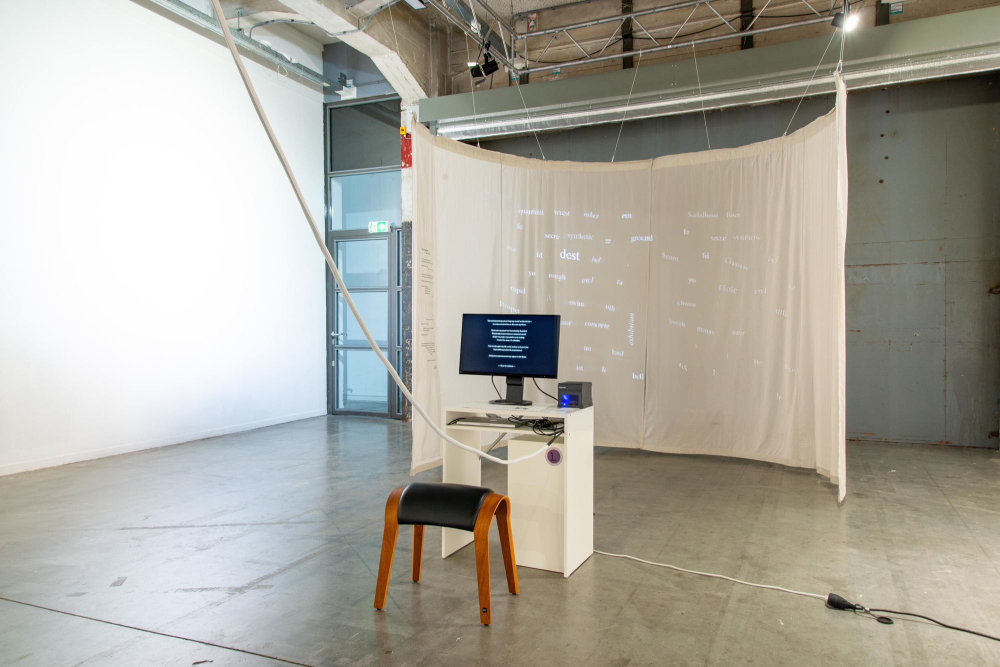
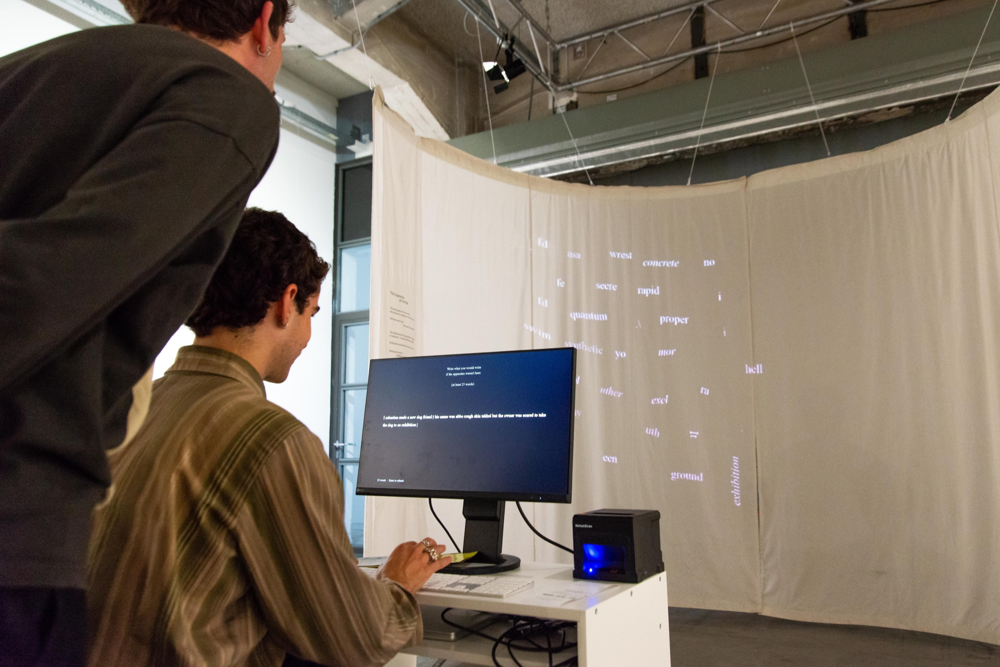
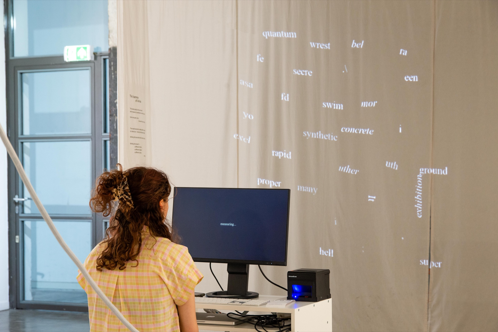

The Grammar of Arrival
The Grammar of Arrival grew out of a research question from my thesis The Loss of a Body: what happens when situated writing — shaped by a body, a history, a habit of speech — meets a system that has already decided which sentences are ordinary? A language model doesn't read meaning; it assigns probability. Writing that resembles the institutional English it was trained on arrives easily. Writing that doesn't carries a cost the model can measure but never explain.
Visitors write one sentence, starting only from the word I, on a local model kept offline. It scores every word by how surprising it was and keeps only what it found most costly — the rest, including the sentence itself, is deleted on the spot. What remains joins a shared, asymmetrical map projected across the gallery wall, alongside a printed receipt of the visitor's own resistance to what the model expected of them.


